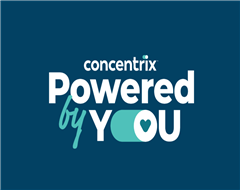

Senior Quality Analyst — Concentrix
- Own daily & weekly data analysis and reporting in Excel (audit & coaching attainment, critical errors, utilization planning, compliance) feeding weekly business reviews; cut reporting time 60% through automation.
- Partnered with the client on SOP improvements based on analysis of agent feedback, improving account performance 30%.
- Analyze quality and performance trends to spot recurring gaps, lead root-cause analysis, and turn findings into action plans across agents, team leaders, and QA workflows.
- Manage communication and expectations with internal stakeholders and client POCs — sharing insights, aligning on quality standards in calibrations, and supporting performance decisions.